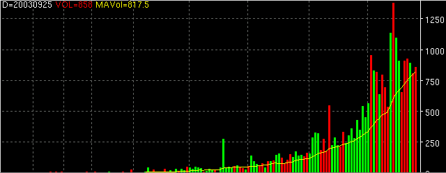

Volume - VOL

Parameters:
- Color - The non-volume method plot color
- Up Color - The volume color for 'up' days
- Down Color - The volume color for 'down' days
- Line Type - The non-volume method line type
- VOL Line Type - The volume method line type
- Label - The text to identify the plot
- MA Color - MA color
- MA Label - The text to identify the MA plot
- MA Line Type - MA line type
- MA Period - Period of the MA. Value of 0 will remove MA from plot.
- MA Type - The MA type to use.
- Method - The volume study used to generate the plot
- VOL - Volume
- NVI - Negative Volume Index
- PVI - Positive Volume Index
- PVT - Positive Volume Trend
Description:
Contains the standard volume indicator and several volume related ones.
Formula Reference:
Syntax
|
VOL(Method)
|
Function
|
Method is one of the methods
available.
|
Example
|
VOL(VOL) or VOL(PVT)
|